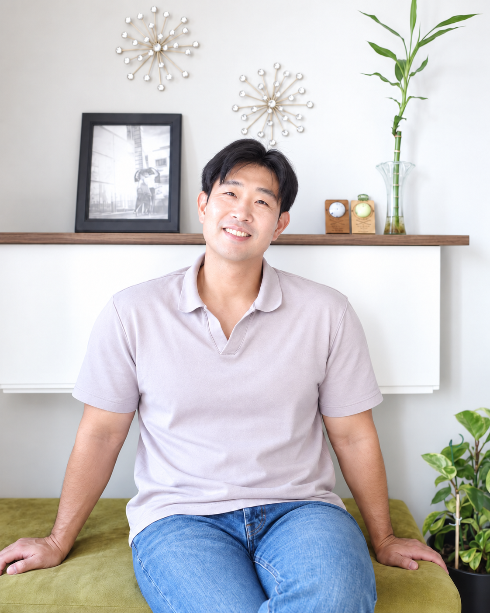

Mechanical engineer working across physical modeling, robotics, sensing, computation, control, and quantitative system validation.
I am a mechanical engineer whose work bridges experimental dynamics, mathematical modeling, and autonomous robotics. My background includes mechanical engineering at Pusan National University, graduate research in structural dynamics and experimental validation at the University of Victoria, and doctoral-level coursework and mobile robotics research at the University of Waterloo.
My current work brings together robot kinematics and dynamics, perception, motion planning, model-based control, and reinforcement learning. I build analytical and simulation-based systems using Python, C++, ROS 2, and Isaac Sim, with a focus on connecting physical models to executable control strategies and measurable task performance.
Across these fields, I return to the same engineering question: how well do we understand a physical system before attempting to control it? I start with the governing assumptions, constraints, and variables, then test analytical predictions against independent calculations, simulation, and experimental evidence. When results disagree, I investigate the model and its interfaces rather than treating a plausible numerical result as proof of correctness.
I value engineering work that turns complex technical findings into clear decisions and reproducible results. Experience in technology research, analysis, and business development has reinforced the importance of evaluating feasibility, evidence, and practical constraints alongside technical performance. I use AI tools to accelerate research, implementation, and documentation, while taking responsibility for verifying the assumptions, data, and conclusions behind the work.
